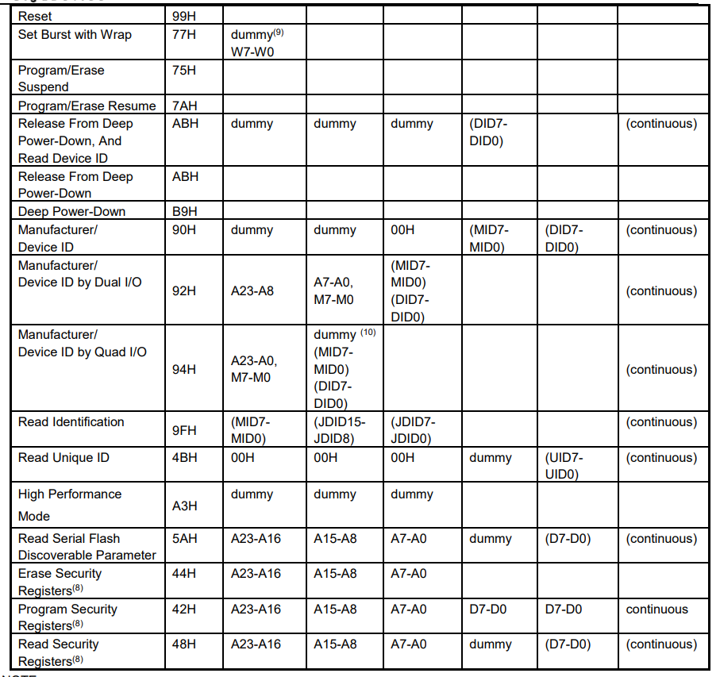
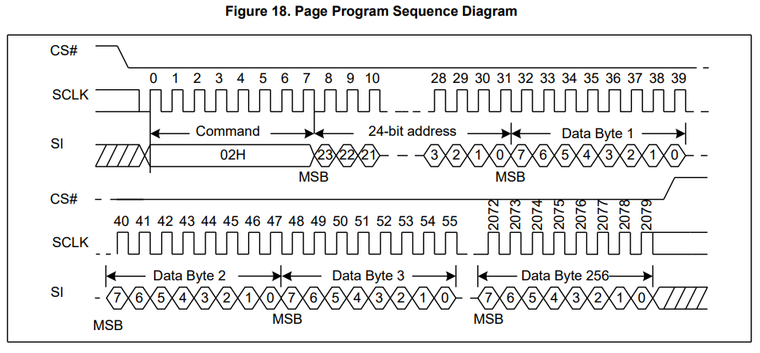

SPI
SPI（Serial Peripheral Interface）是一种全双工的同步串行通信协议。
特点
硬件架构：SPI使用一组主/从架构，其中一个设备（通常是微控制器）充当主设备，控制通信和时序，其他设备则作为从设备响应主设备的命令。
信号：SPI使用四个信号进行通信：
MOSI: Master Output, Slave Input.MISO: Master Input, Slave Output.SCK: Serial Clock, 由主设备产生。SS: Slave Select (Chip select)，由主设备控制，低电平期间有效。
传输模式：SPI协议支持四种传输模式，具体取决于时钟极性（CPOL: clock polarity）和时钟相位（CPHA: clock phase）。
- Mode 0: CPOL=0, CPHA=0
- Mode 1: CPOL=0, CPHA=1
- Mode 2: CPOL=1, CPHA=0
- Mode 3: CPOL=1, CPHA=1
缺点：SPI协议缺少错误检测和校验机制，因此在传输数据时需要特别小心，以确保数据的完整性和准确性。
多从机连接方式
Parallel wiring:
每个从机需要单独一根SS。
Daisy chaining:
每个从机共用一根SS，数据在设备间串行传输，串联设备中出现错误时，将导致优先级在其之下的设备断开，因此需要检测总线，从而可以短路发生故障的从机，避免造成链路崩溃。
Flash操作
以下的内容展开以兆易创新的8M Flash GD25Q64C为例。
模式
GD25Q64C支持3种SPI工作模式，分别为：
Standard SPI：标准SPI模式采用4根线，Serial Clock (SCLK), Chip Select (CS#), Serial Data Input (SI) and Serial Data Output (SO)。该模式支持SPI模式0和模式3，输入数据在SCLK的上升沿被锁存，数据在SCLK的下降沿被移出。Dual SPI：双线模式，速度为标准SPI的两倍。在双线模式下，SI和SO变成双向I/O管脚。可直接使用Dual命令来进行传输。Quad SPI：四线模式，速度为标准SPI的四倍。在四线模式下,SI和SO变成双向I/O，同时WP#和HLOD变为IO2和IO3。使用Quad命令前，需要使能状态寄存器的Quad Enable Bit（QE）。
命令

- Dual Output data
IO0 = (D6, D4, D2, D0)
IO1 = (D7, D5, D3, D1) - Dual Input Address
IO0 = A22, A20, A18, A16, A14, A12, A10, A8 A6, A4, A2, A0, M6, M4, M2, M0
IO1 = A23, A21, A19, A17, A15, A13, A11, A9 A7, A5, A3, A1, M7, M5, M3, M1 - Quad Output Data
IO0 = (D4, D0, …)
IO1 = (D5, D1, …)
IO2 = (D6, D2, …)
IO3 = (D7, D3, …) - Quad Input Address
IO0 = A20, A16, A12, A8, A4, A0, M4, M0
IO1 = A21, A17, A13, A9, A5, A1, M5, M1
IO2 = A22, A18, A14, A10, A6, A2, M6, M2
IO3 = A23, A19, A15, A11, A7, A3, M7, M3 - Fast Read Quad I/O Data
IO0 = (x, x, x, x, D4, D0,…)
IO1 = (x, x, x, x, D5, D1,…)
IO2 = (x, x, x, x, D6, D2,…)
IO3 = (x, x, x, x, D7, D3,…) - Fast Word Read Quad I/O Data
IO0 = (x, x, D4, D0,…)
IO1 = (x, x, D5, D1,…)
IO2 = (x, x, D6, D2,…)
IO3 = (x, x, D7, D3,…) - Fast Word Read Quad I/O Data: the lowest address bit must be 0.
- Security Registers Address:
Security Register1: A23-A16=00H, A15-A10=000100b, A9-A0= Byte Address;
Security Register2: A23-A16=00H, A15-A10=001000b, A9-A0= Byte Address;
Security Register3: A23-A16=00H, A15-A10=001100b, A9-A0= Byte Address. - Dummy bits and Wrap Bits
IO0 = (x, x, x, x, x, x, W4,x)
IO1 = (x, x, x, x, x, x, W5, x)
IO2 = (x, x, x, x, x, x, W6, x)
IO3 = (x, x, x, x, x, x, x, x) - Address, Continuous Read Mode bits, Dummy bits, Manufacture ID and Device ID
IO0 = (A20, A16, A12, A8, A4, A0, M4, M0, x, x, x, x, MID4, MID0, DID4, DID0, …)
IO1 = (A21, A17, A13, A9, A5, A1, M5, M1, x, x, x, x, MID5, MID1, DID5, DID1, …)
IO2 = (A22, A18, A14, A10, A6, A2, M6, M2, x, x, x, x, MID6, MID2, DID6, DID2, …)
IO3 = (A23, A19, A15, A11, A7, A3, M7, M3, x, x, x, x, MID7, MID3, DID7, DID3, …)
操作
Read
读取操作之前需要拉低CS#选中当前Flash，Read Data Bytes（Read）命令后面跟着一个3字节地址（A23-A0），被寻址的第一个字节可以在任何位置。在每个字节的数据被移出后，地址会自动递增到下一个更高的地址。因此，可以使用单个读取数据字节（read）命令读取整个内存。重新拉高CS#以停止当前读取操作。当擦除、编程或写入周期正在进行时，任何读取数据字节（Read）命令都会被拒绝，而不会对正在进行的周期产生任何影响。
和上面的差别在于时钟频率为最大时钟频率，同时在地址后紧接一个dummy byte。
在每个时钟周期内，一共有两个位的数据同时从SI和SO输出。
Dual I/O Fast Read和上面很相似，差别在于增加了一个连续模式的位段(M7-4)，且除了命令数据外，其余数据均在每个时钟周期都会同时发送2位。
连续模式：当Dual I/O Fast Read下的数据位(M5-4)=(1,0)时，下一个Dual I/O Fast Read命令可以省略。而当其值不为(1,0)时，恢复为正常模式，此时需要发送命令来进行下一次新的读取操作。
在连续模式下，发起新读取操作不需要继续发送BBH.
在每个时钟周期内，一共有4位数据从IO3,IO2,IO1,IO0输出。
连续模式：当Quad I/O Fast Read下的数据位(M5-4)=(1,0)时，下一个Quad I/O Fast Read命令可以省略。而当其值不为(1,0)时，恢复为正常模式，此时需要发送命令来进行下一次新的读取操作。
在连续模式下，发起新读取操作不需要继续发送EBH.

Write
在写数据之前，需要先发送写使能指令WREN。同样地，拉低CS#以选中当前Flash。如果最低有效的8个地址位（A7-A0）不全为零，则所有超出当前页末尾的传输数据都将从同一页的起始地址（即其8个最低有效位（A7-A0）全为零的地址）继续写入。如果向设备发送超过256个字节，则先前锁存的数据将被丢弃，并且保证最后256个数据字节在当前页面被正确写入，因此，在最后一个数据字节写完后，必须将CS#拉高。而如果发送到设备的数据字节数少于256，则它们将在请求的地址处写入，而不会对同一页面的其他字节产生影响。

和PP指令一样，但是在每个时钟周期内，一共有4位数据从IO3,IO2,IO1,IO0输出。
差别在于使用了最大的时钟频率。
Erase
Flash特性是只能从1写到0，因此，在往Flash写入数据前，需要先擦除原本Flash上的数据。在发送扇区擦除（SE）命令之前，必须先执行写使能（WREN）命令。扇区内的任何地址都是扇区擦除（SE）命令的有效地址。注意执行完命令后将CS#拉高。
32k块内的任何地址都是擦除命令的有效地址。
64k块内的任何地址都是擦除命令的有效地址。
该命令可将整片Flash数据擦除。
References
[1] Motorola Inc. SPI Block Guide V04.01[S]. 2004.
[2] GigaDevice, GD25Q64C DATASHEET[S]. 2018,8,1